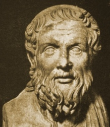

Sacred Texts Classics Apollonius of Tyana
Buy this Book at Amazon.com
|

Apollonius of Tyana (Public Domain Image) |
The Life of Apollonius of Tyanaby Philostratustr. F.C Conybeare[1912] |
As Conybeare quaintly notes in the introduction to his Loeb edition of Philostratus' (alas, probably largely fictional) biography of Apollonius, '...for there is in it much that is very good reading and it is lightly written.' Well, this is probably not summer beach reading material, but this is an archaic delight to read, like Mandeville.
We get to visit far-flung lands at the height of the Roman Empire, from India and Africa to Spain. The sage is on a quest for knowledge, with his faithful companion Damis. Reputedly, Apollonius was clairvoyant, sensing remote events at the very moment they happened, sometimes in a very visceral way. Surprising bits of lore pop up through this work, strange Zen-like anecdotes of Apollonius which ring true as crazy wisdom...
Apollonius was both an historical figure who is cross-referenced in contemporary documents, and a legendary 'Pagan Christ' with all the trimmings. The 3rd century Emperor Alexander Severus revered Apollonius of Tyana, Christ, Abraham, Orpheus, and Alexander the Great in his private shrine. Later Christian writers reviled him as a sorcerer, up until the Enlightenment.
There were two extra texts in the Loeb edition of Philostratus: The Epistles of Apollonius of Tyana, and Eusebius' critique of Philostratus.